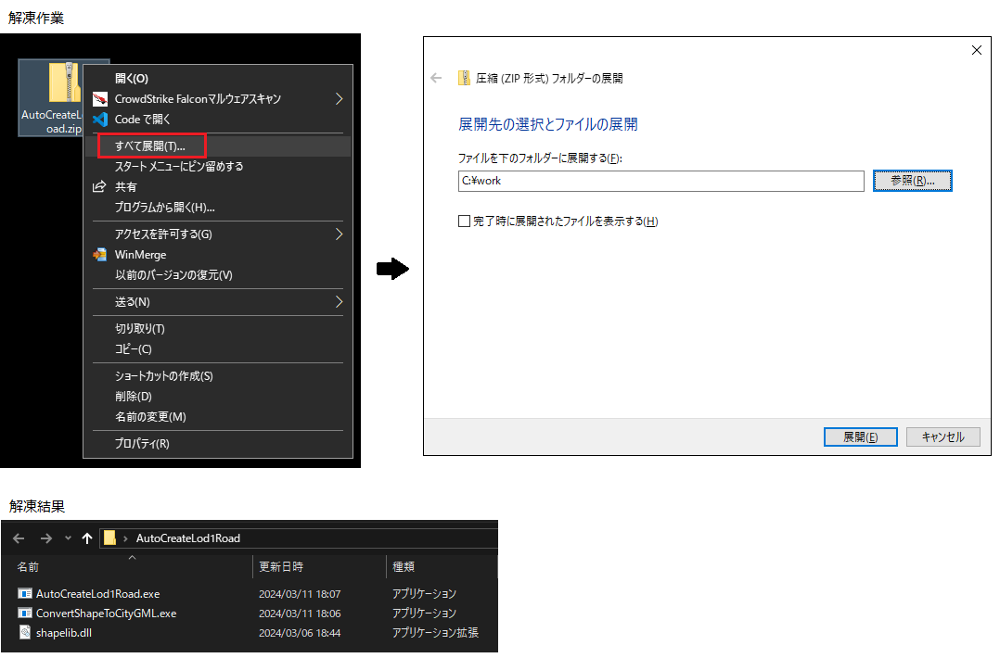
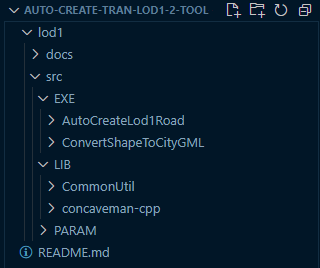
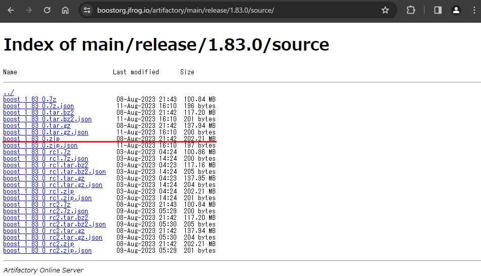
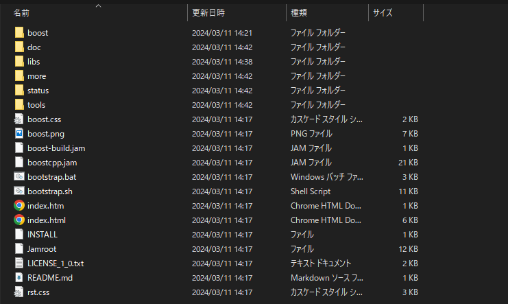
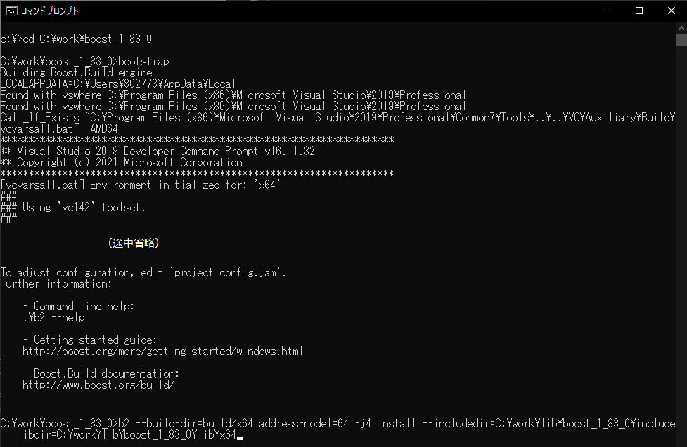
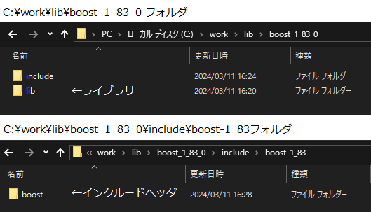
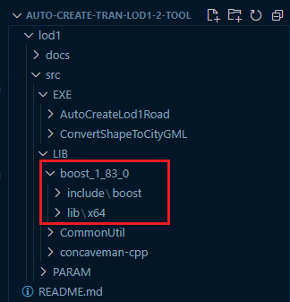
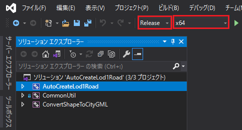
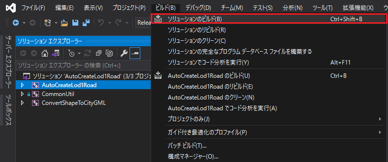
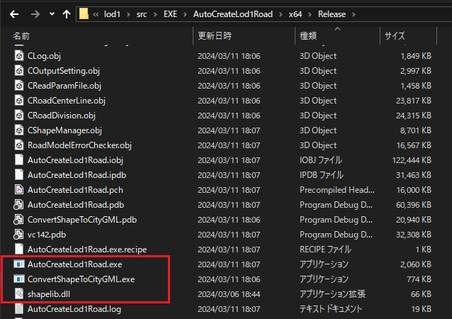

環境構築手順書
1 本書について
本書では、LOD1道路モデル自動作成ツール（以下「本ツール」という。）の環境構築手順について記載しています。
2 動作環境
本ツールの動作環境は以下のとおりです。
| 項目 | 最小動作環境 | 推奨動作環境 |
|---|---|---|
| OS | Microsoft Windows 10 または 11 | 同左 |
| CPU | Intel Core i7以上 | 同左 |
| メモリ | 16GB以上 | 32GB以上 |
| HDD空き容量 | 1GB以上 | 5GB以上 |
| ネットワーク | 不要 | 同左 |
3 インストール手順
こちら からアプリケーションをダウンロードします。
ダウンロード後、zipファイルを右クリックし、「すべて展開」を選択することで、zipファイルを展開します。
展開されたフォルダ内の「AutoCreateLod1Road.exe」と「ConvertShapeToCityGML.exe」がLOD1道路自動作成ツールのアプリケーションです。 二つのアプリケーションはコンソールアプリケーションのため、コマンドプロンプトなどのコンソールから使用可能です。

4 ビルド手順
自身でソースファイルをダウンロードしビルドを行うことで、実行ファイルを作成することができます。
ビルドにはVisualStudio2019を使用するため、事前にVisualStudio2019をインストールする必要があります。
ソースファイルは
こちら
からダウンロード可能です。
GitHubからダウンロードしたソースファイルの構成は以下のとおりです。

ビルド時に本ツールが参照しているBoost C++ Librariesが必要なため、以下からboost_1_83_0.zipをダウンロードしてください。
Boost C++ Libraries ver.1.83.0

4-1 Boost C++ Libraries のビルド
Boost C++ Librariesのビルドには約3GBのHDD容量が必要になります。
（1）事前にダウンロードしたboost_1_83_0.zipを解凍します。
本書では、C:\work下に解凍したものとし、C:\work\boost_1_83_0以下のファイル構成は下図のとおりです。

（2）コマンドプロンプトを使用してBoost C++ Librariesのビルドします。
コマンドプロンプトを起動し、カレントディレクトリを（1）で解凍したboost_1_83_0フォルダに移動します。
そして、bootstrapコマンドを実行します。
次に、b2コマンドを使用してライブラリをビルドします。
b2コマンドのオプションについては以下に示すとおりです。
| オプション | 説明 |
|---|---|
| --build-dir | ビルドディレクトリのパス。 |
| address-model | 64 : 64bitのライブラリを作成します。 32 : 32bitのライブラリを作成します。 |
| -j（数字） | 並列ビルド設定。複数のCPUを使用してビルドすることが可能です。 数字部分は自マシンのスペックによって変更してください。 |
| --includedir | 指定したパスにインクルードヘッダファイルを出力します。 |
| --libdir | 指定したパスにライブラリファイルを出力します。 |
【コマンド例】
解凍したライブラリがC:\work\boost_1_83_0
# cd C:\work\boost_1_83_0
# bootstrap
# b2 --build-dir=build/x64 address-model=64 -j4 install --includedir=C:\work\lib\boost_1_83_0\include --libdir=C:\work\lib\boost_1_83_0\lib\x64

【ビルド結果】

（3）ビルド結果のインクルードヘッダファイルとライブラリファイルをソースフォルダに移動します。
【インクルードヘッダファイルのコピー】
（b2コマンドの--includedirで指定したパス）\boost-1_83\boostフォルダ を
（ソースコードの保存先パス）\Auto-Create-tran-lod1-2-tool\lod1\src\LIB\boost_1_83_0\include下にコピーします。
【ライブラリファイルのコピー】
（b2コマンドの--includedirで指定したパス）内のファイルを
（ソースコードの保存先パス）\Auto-Create-tran-lod1-2-tool\lod1\src\LIB\boost_1_83_0\lib\x64にコピーします。
本ツールのソースコードがC:\work以下に設置されており、ライブラリビルド時のb2コマンドの--includedirオプションがC:\work\lib\boost_1_83_0\include、--libdirオプションがC:\work\lib\boost_1_83_0\lib\x64の場合のコピー元、コピー先のフォルダパスは以下のとおりです。
| 項目 | コピー元フォルダパス | コピー先フォルダパス |
|---|---|---|
| インクルードヘッダファイル | C:\work\lib\boost_1_83_0\include\boost-1_83\boost | C:\work\Auto-Create-tran-lod1-2-tool\lod1\src\LIB\boost_1_83_0\include\boost |
| ライブラリファイル | C:\work\lib\boost_1_83_0\lib | C:\work\Auto-Create-tran-lod1-2-tool\lod1\src\LIB\boost_1_83_0\lib |
【ライブラリコピー後のソースコードフォルダ構成】

4-2 Lod1道路自動作成ツールのビルド
（1）本ツールのソリューションファイル（AutoCreateLod1Road.sln）をVisualStudio2019で開きます。
ソリューションファイルは、Auto-Create-tran-lod1-2-tool\lod1\src\EXE\AutoCreateLod1Roadに格納されています。
（2）AutoCreateLod1Road.slnをVisualStudio2019で開くと、ソリューション'AutoCreateLod1Road'に3つのプロジェクトが表示されます。
以下の赤枠部分のように、ソリューション構成を【Release】に、ソリューションプラットフォームを【x64】に設定します。

（3）以下の赤枠部分のように、[ソリューションのビルド]を選択し、ソリューション全体をビルドします。

（4）ビルドが正常に終了すると、ソリューションファイルと同じフォルダにあるx64\Releaseフォルダに実行ファイルが作成されます。
以下赤枠内のファイルがアプリケーション実行時に必要なファイルです。

| ファイル名 | 説明 |
|---|---|
| AutoCreateLod1Road.exe | LOD1道路モデル自動作成ツール |
| ConvertShapeToCityGML.exe | LOD1道路モデルのシェープファイルをCityGMLファイルに変換するツール |
| shapelib.dll | シェープファイル入出力ライブラリ |